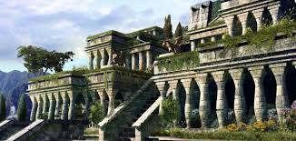

تُعتبر حدائق بابل المعلقة الحدائق الملكية الخاصة بالملك نبوخذ نصر الثاني، وإحدى عجائب الدنيا السبع القديمة، وقد تم بناؤها في مدينة بابل، وتعددت الروايات والقصص التي تصف عظمة البناء وروعته في تلك الحدائق؛ حيث تشير إحدى الروايات التي تُنسب إلى المؤرخ اليوناني هيرودوت أن حدائق بابل كانت مُحاطة بجدران خارجية بلغ طولها 90 كم، وسمكها ما يُقارب 24م وارتفاعها 97.5م، فضلاً عن جدرانها الداخلية التي كانت تحوي بداخلها على العديد من أماكن العبادة، والقلاع، والتماثيل المصنوعة من الذهب الخالص، وبعض النظر عن صحة رواية هيرودوت وغيره، إلا أنها تُشير بشكل عام إلى عظمة البناء وروعة التشييد الذي كان يشعر به زائرها، وقد أصبحت هذه الحدائق بذاكرة التاريخ؛ وذلك نتيجة للزلزال الذي ضربها بالقرن الثاني قبل الميلاد
يُعد ما يُعرف بتمثال زيوس أحد عجائب الدنيا السبع القديمة، وقد تم بناؤه كتكريم للإله زيوس على يد النحات اليوناني فيدياس وفريق من المعاونين له، وذلك في العام 432 قبل الميلاد في مدينة أوليمبيا اليونانية، كما تمّ نحته في أحد المعابد اليونانية ليبلغ ارتفاعه 12م تقريباً على قاعدة خشبية كبيرة، وقد شكّلت مادتا الذهب والعاج جسم التمثال الذي كان يحمل بيده اليسرى صولجاناً مُرصّعاً بكافة أشكال المعادن، وبيده اليُمنى تمثالاً صغيراً لآلهة النصر الإغريقية التي تحمل اسم نايك، أما العرش الذي يجلس عليه فهو مصنوعٌ من مزيج من الأحجار الكريمة، والذهب، وخشب الأبنوس